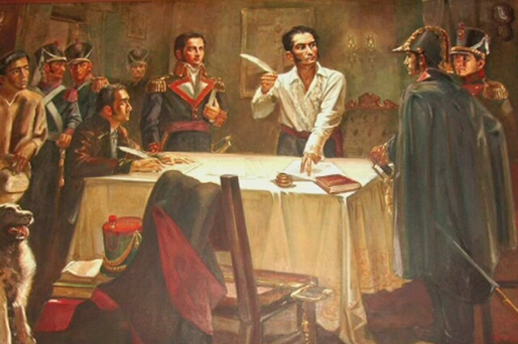
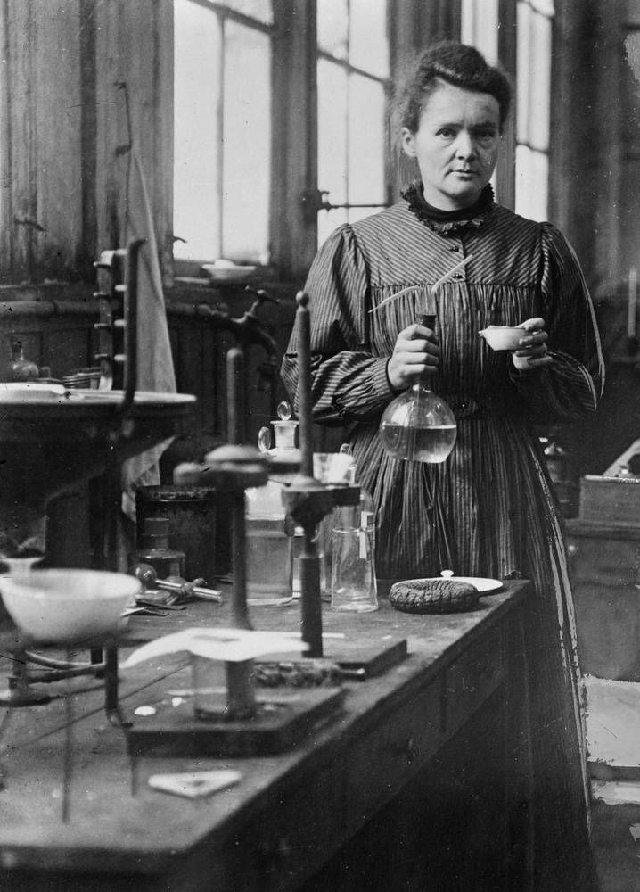
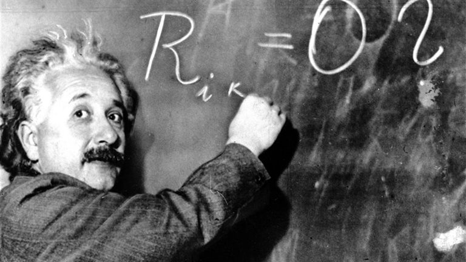
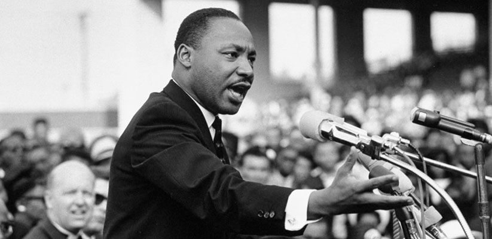

Biografías
Simón Bolivar

Simón José Antonio de la Santísima Trinidad Bolívar Palacios
Ponte y Blanco.
Fue un militar y político venezolano, fundador de las repúblicas
de la Gran Colombia y Bolivia. Fue una de las figuras más
destacada de la emancipación hispanoamericana frente al Imperio
español.
Para más Info Click Aquí
Marie Curie

Marya Salomea Skłodowska-Curie. (Varsovia, 7 de noviembre
de 1867-Passy, 4 de julio de 1934), fue una científica polaca
nacionalizada francesa. Pionera en el campo de la radiactividad,
fue la primera persona en recibir dos premios Nobel en distintas
especialidades
Para más Info
Click Aquí
Juan Calvino

Juan Calvino (Noyon, 10 de julio de 1509-Cantón de
Ginebra, 27 de mayo de 1564), bautizado con el nombre de Jehan
Cauvin, latinizado como Calvinus, fue un teólogo francés,
considerado como uno de los autores y gestores de la Reforma
Protestante.
Info
Click Aquí
Albert Eistein

Albert Einstein (1879-1955) Nació el 14 de marzo de 1879,
en Ulm (Alemania). Murió el 18 de abril de 1955, en Princeton
(Estados Unidos de América). Es el científico mundialmente más
conocido por el desarrollo de la Teoría de la Relatividad que
revolucionó la ciencia conocida hasta el siglo XX.
Para más Info
Click Aquí
Martin Luther King

Martin Luther King Jr. Fue un activista y pastor baptista
estadounidense del siglo XX (nació el 15 de enero de 1929 en
Atlanta y falleció el 4 de abril de 1968 en Memphis a los 39 años
de edad) conocido principalmente por: – Luchar pacíficamente
contra la segregación y discriminación racial en Estados Unidos.
Para más Info
Click
Aquí